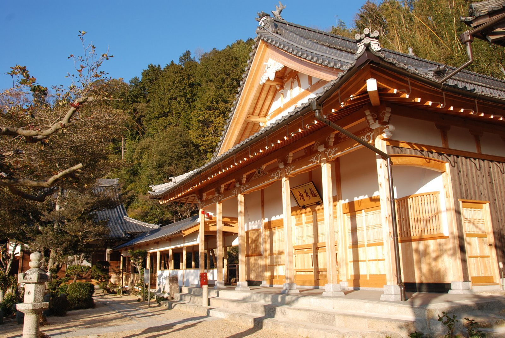
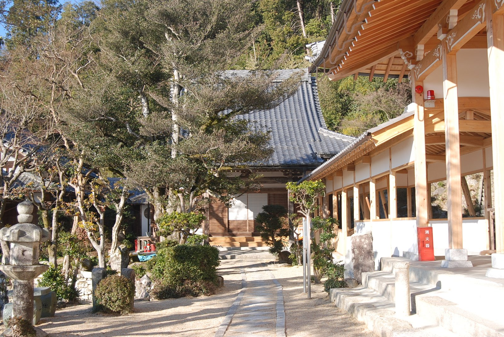
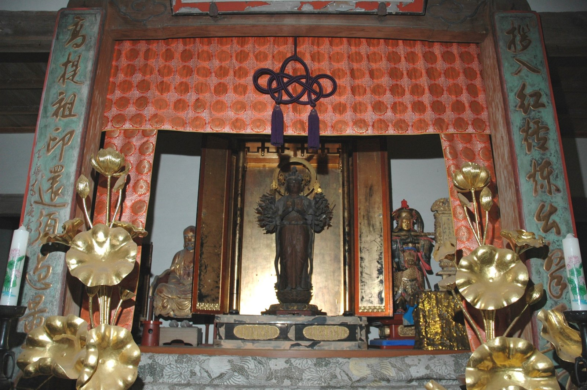
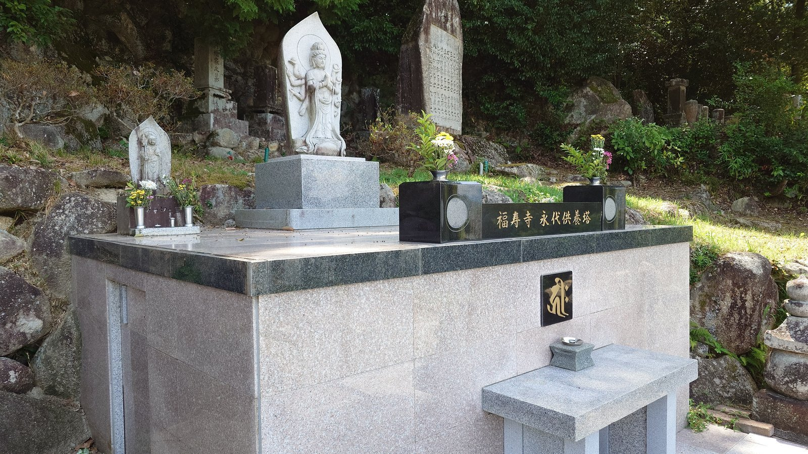
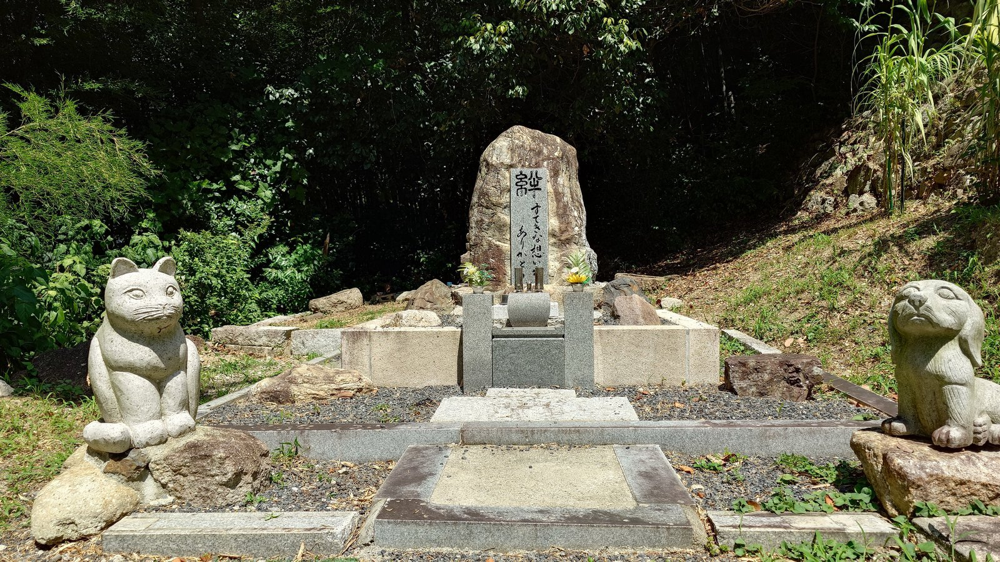

拝観のご案内
拝観をご希望の方は、事前にお問い合わせフォームよりご連絡ください。
会議・茶会・研修会等の会場利用もご相談いただけます。
年中の主な行事
花まつり・大般若祈祷会
四月上旬。お釈迦さまの誕生をお祝いするとともに、
大般若経を転読して皆さまのご健勝を祈願いたします。
日程は年によって前後しますので、お越しの際は事前にお問い合わせください。
大施餓鬼
八月十六日。お盆にあわせ、有縁無縁の一切の精霊に供養を捧げる法要です。
ご供養のご案内
下記のご供養についてご相談を承っております。お問い合わせフォームよりご連絡ください。

永代供養塔
ご遺骨をお預かりし、永代にわたり当山がご供養いたします。 個別のお墓を設けることが難しい方や、後継者のいない方もご相談ください。

ペット合葬墓
境内にペット合葬墓を設けております。大切な家族の一員であるペットの ご供養・ご埋葬についてご相談いただけます。